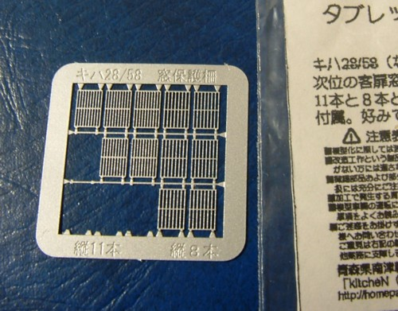
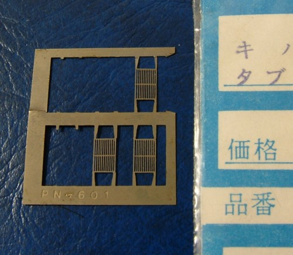
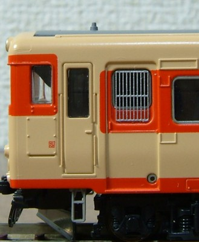

銀河モデル(N-247) タブレットプロテクター塗装済みで、赤11号とクリーム色10号(うみねこ用?)があります。中桟のあるものと無いタイプが入っていますが、 中桟の無いタイプは実物で未だにお目にかかったことがありません。 塗装がぼってりしているのですが、それが丸棒になっている縦棒の雰囲気を出しています。 焼付け塗装のようで、ラッカーで銀に塗ろうとしたらうまく塗れませんでした。 |
|
|  |
kitcheN(906G) タブレット保護棒58系11本のタイプと8本のタイプが入っています。ステンレスエッチングで無塗装です。 抜きはシャープですが、その分「板」な感じが目立ってしまいます。 上下の足の出方やや内側からでてしまっていておかしいようです。 私は上下の足を切り取って使用しました。 |
|  |
TAVASA(PN-601) キハ58系用タブレット保護棒ステンレスエッチングで無塗装です。 |
銀河客用窓との大きさのバランスがよく、実物では両端の棒が上下に伸びている取り付け足も自然に見えます。 |
||
kitcheN抜きが細くシャープです。板厚は銀河より薄くできています。 |
 |